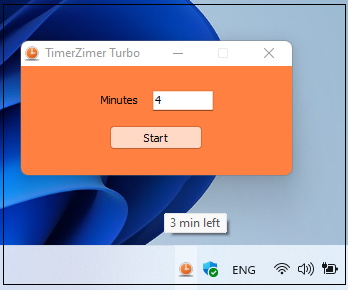
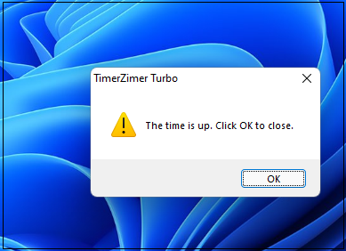

TimerZimer is a free program for Microsoft Windows which lets
a user like you and me simply set a timer and get notified when
the time is up with the message and sound. That's it!

Just enter an amount of minutes between 1 and 1440 and click
Start or hit Enter. TimerZimer will dutifully hide in the system tray.

Get notified. You can use your own sound: just replace the .wav file!